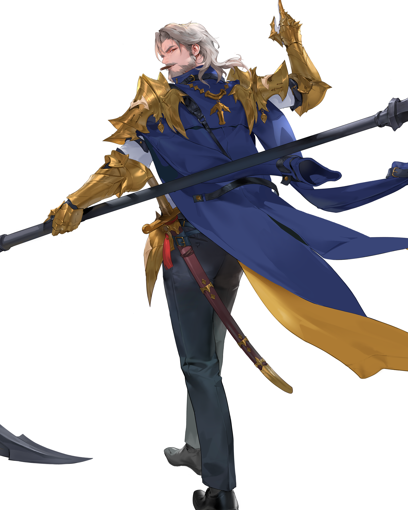

Apa itu Guardian Tales?
Guardian Tales adalah permainan action role-playing yang dirilis pada tahun 2020, dikembangkan oleh Kong Studios dan diterbitkan oleh penerbit asal Korea Selatan, Kakao Games. Permainan ini pertama kali diluncurkan secara terbatas di beberapa wilayah Asia Tenggara pada 24 Februari 2020 untuk perangkat iOS dan Android, lalu dirilis secara resmi untuk seluruh dunia pada 28 Juli 2020. Versi berbahasa Mandarin yang diterbitkan oleh Bilibili dirilis pada 27 April 2021, sedangkan versi berbahasa Jepang yang diterbitkan secara mandiri oleh Kong Studios bekerja sama dengan Yostar dirilis pada 6 Oktober 2021. Versi port untuk Nintendo Switch awalnya diumumkan pada Mei 2021 dan dijadwalkan rilis pada paruh akhir tahun yang sama, namun akhirnya mengalami penundaan dan dirilis secara resmi pada 4 Oktober 2022.
Permainan ini mengisahkan tentang Guardian Knight, seorang anggota baru pasukan kerajaan Kanterbury Kingdom yang disebut sebagai Guardian. Setelah menyelesaikan pelatihan pertamanya sebagai Guardian, Guardian Knight langsung dihadapkan dengan serangan dari kelompok musuh yang disebut The Invaders, yang berniat menguasai dunia. Guardian Tales mendapat sambutan positif dari para kritikus maupun pemain, dan dipuji karena kreativitasnya serta keberhasilannya membangkitkan nuansa permainan JRPG klasik.
My Account
| In-Game Name | ID Player | Server | Level Guardian | Current World |
|---|---|---|---|---|
| Shouji | #1R08N3 | Asia 2 | 300 | World 15 |
Favorite Character
Karakter favoritku di game ini yakni Kamael. Salah satu alasan utama aku menyukai Kamael adalah karena desain original-nya yang sangat keren dan unik. Karakter ini punya nuansa misterius tapi tetap terlihat powerful, terutama dengan jubah dan tongkatnya yang khas. Dari awal muncul, Kamael udah kelihatan beda dari hero lain — desainnya nggak terlalu ramai tapi tetap punya aesthetic yang kuat. His default look gives off a vibe of elegance and strength, and that instantly made him one of my favorite characters in the game.
Selain itu, desain blooming-nya menurutku sangat memukau dan karismatik. Wujud evolusi Kamael ini memberi kesan bahwa dia sudah mencapai bentuk tertingginya — lebih tegas, lebih matang, dan penuh aura kepemimpinan. The way his appearance evolves feels like a natural growth of his story and power. Dengan efek visual yang lebih megah dan sikap tubuh yang lebih percaya diri, Kamael tampil seperti sosok pemimpin yang tidak hanya kuat, tapi juga bisa diandalkan di medan perang.
Dari segi gameplay, Kamael juga sangat memuaskan. Dia tergolong karakter yang mudah digunakan, bahkan untuk pemain yang tidak terlalu suka mekanik rumit. He has great AoE damage, solid sustain, and works well in many team compositions. Hal ini bikin Kamael nggak cuma menarik dari segi visual, tapi juga sangat relevan dan berguna di hampir semua mode permainan. Karakter yang punya kombinasi penampilan, kekuatan, dan kemudahan seperti ini jelas pantas jadi favorit.
| Kamael | |||||
|---|---|---|---|---|---|
| God of Harvest | |||||
|  | |||||
| RARITY Unique |
CLASS Support |
ELEMENT Earth |
|||
| Compatible Equipments | |||||
| Staff | Accessory | ||||
| Exclusive Weapon | |||||
| Equinox | |||||
| HERO INFORMATION | |||||
| Name | Kamael | ||||
| Title | God of Harvest | ||||
| Gender | Male | ||||
| Age | Unknown | ||||
| Species | God | ||||
| Height | 192cm | ||||
| Weight | 92kg | ||||
| Related Characters |
|
||||
| Release Date |
|
||||
Kamael adalah salah satu karakter dalam gim Guardian Tales yang dikenal sebagai penyihir misterius dengan kekuatan sihir luar biasa. Ia berasal dari dunia yang dipenuhi konflik dan kegelapan, namun tetap mempertahankan ketenangan dan aura anggun dalam setiap tindakannya. Kamael memiliki penampilan yang elegan dengan jubah sihir khas dan tongkat sihir sebagai senjata utamanya. Sebagai penyihir, ia mengandalkan kekuatan elemen untuk mengalahkan musuh-musuhnya, menjadikannya sosok yang sangat berbahaya di medan pertempuran.
Selain kemampuannya dalam bertarung, Kamael juga dikenal karena kepribadiannya yang tenang dan bijaksana. Ia sering kali berperan sebagai penasehat atau pelindung bagi karakter lain, menunjukkan sisi kepedulian yang tersembunyi di balik ekspresi dinginnya. Keberadaannya dalam tim tidak hanya memperkuat serangan, tetapi juga menambah kedalaman cerita dengan latar belakang dan motivasinya yang menarik. Sebagai karakter yang kompleks, Kamael berhasil menarik perhatian para pemain dan menjadi salah satu tokoh favorit dalam Guardian Tales.
Abilities
Normal Attack
Circle of Life
Absorbs enemy's life force to deal damage. On the last Circle of Life's hit, shoots a concentrated orb to heal all allies' HP, and reduces the enemy's ranged Def by 20% for 3 seconds.
Chain Skill — Airbone → Injured
Earthly Purification
Summons an elemental to deal 220% of DPS damage to nearby enemies. Restores allies' HP by 20% and remove negative Effects.
Special Ability
Nature's Blessing
Increases Circle of Life's damage and recovery by 25%.
Ex Weapom
Equinox
[Kamael only]Attacks a maximum of 3 enemies near Circle of Life. On Circle of Life's hit, deal 25% of DPS damage with 50% chance, and immediately reduces ranged Def effect.
Kamael adalah Dewa Panen yang mengawasi fauna dan flora melalui kekuatan bumi dan kehidupan itu sendiri.
Ia adalah dewa yang melayani Prometheia dan menjalankan tugas menghidupkan kembali Pohon Dunia. Kamael dulunya adalah penyihir hebat dengan mana yang kuat. Ia menjadi dewa setelah diberkati dengan kekuatan ilahi oleh Prometheia saat ia membutuhkan dewa yang lebih rendah untuk mengelola Pohon Dunia. Prioritas utama Kamael saat ini adalah memulihkan Pohon Dunia yang terbakar. Ia akan menebas siapa pun, manusia atau dewa yang mengancamnya.
Kamael adalah pendiri perusahaan besar, Kamazon . Kamazon adalah pusat perbelanjaan daring yang menerima pesanan dan mengirimkan produk menggunakan drone. Pusat perbelanjaan ini didirikan untuk mencapai tujuan Kamael, yaitu memperoleh kekuatan finansial terbesar di dunia. Taktik bisnisnya sangat agresif. Ia terkenal dalam bisnisnya karena mengalahkan pesaingnya dan menghilangkan pola pikir 'Sebuah android dapat mengabaikan pesanan yang tidak disukainya' pada orang-orang yang ia pekerjakan. Kamael telah membeli reruntuhan Pohon Dunia dengan uang yang diperolehnya dari Kamazon . Tampaknya Kamael mencari petunjuk untuk memulihkan Pohon Dunia sendiri, tetapi karena suatu alasan ia menghentikan semua penyelidikan sepenuhnya. Ia membangun dan membuka sebagian reruntuhan tersebut menjadi taman hiburan Kama-ZONE . Kama-ZONE terkenal karena memiliki banyak artefak mistis dan bahkan sekarang, kelompok-kelompok yang melakukan penyelidikan di dalam area tertutup Kama-ZONE terlihat dari waktu ke waktu. Setelah kelompok-kelompok investigasi menghilang, area tersebut menjalani perawatan dan menjadi area baru bagi Kama-ZONE .
Dia mungkin seorang CEO perusahaan besar yang dingin dan terkenal, tetapi dia hangat hati terhadap Bari dan Mayreel . Dia menganggap kedua murid yang dibesarkannya dengan penuh kasih sayang seperti anak-anaknya sendiri, tetapi cintanya jarang berbalas seperti orang tua lainnya. Mayreel sangat kesal dengan perhatian Kamael dan itu sering membuatnya sedikit murung. Meskipun mengkhawatirkan Bari dan Mayreel , Kamael selalu mengirim kedua muridnya dalam perjalanan jauh. Apakah itu untuk memulihkan Pohon Dunia, atau untuk menyembunyikan hidupnya sebagai orang perusahaan, tidak diketahui.